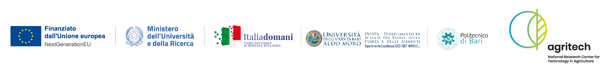

CAT-Lab

CAT-Lab ist ein Projekt, das sich als Living Lab versteht, um nachhaltige Innovationen in der Landwirtschaft marginaler Küstenregionen zu fördern. In einem Kontext zunehmender Umweltbelastung und der Notwendigkeit einer nachhaltigen Bewirtschaftung natürlicher Ressourcen zielt CAT-Lab darauf ab, fortschrittliche Internet-of-Things (IoT)-Lösungen zu integrieren, um die landwirtschaftliche Bewirtschaftung in der Produktion von Gemüse in gefährdeten Regionen zu optimieren. Dabei werden spezifische Herausforderungen adressiert, wie die zunehmende Versalzung des Grundwassers und die Variabilität der Wasserressourcen.
Durch die Installation von IoT-Sensoren auf den Feldern ermöglicht das Projekt die kontinuierliche Erfassung von Daten zu kritischen Parametern wie Bodenfeuchte, Wetterbedingungen und Nährstoffkonzentration.
Das Projekt verfolgt einen ganzheitlichen und multidisziplinären Ansatz, integriert künstliche Intelligenz und die Prinzipien von One Health. Es werden Überwachungssysteme implementiert, um Daten zur Gesundheit der Ökosysteme zu sammeln, und nachhaltige landwirtschaftliche und forstliche Praktiken zur Bodenfruchtbarkeit gefördert.
SWING.IT beteiligt sich am Projekt als technologischer Partner. Software Engineering Italia S.r.l. übernimmt die Installation des IoT-Sensornetzwerks und der Datenmanagementplattform und integriert fortschrittliche Algorithmen für die prädiktive Analyse, um ein innovatives Decision Support System (DSS) zu schaffen.
AGRITECH - Nationales Forschungszentrum für Agrartechnologien, Projektnummer CN00000022, CUP H93C22000440007, finanziert im Rahmen des Nationalen Wiederaufbauplans, Mission 4 „Bildung und Forschung“ – Komponente 2 „Von der Forschung zum Unternehmen“ – Investition 1.4, finanziert von der Europäischen Union – NextGenerationEU - CN00000022, CUP H93C22000440007, Akronym CAT-Lab im Rahmen des Cascading-Ausschreibungsverfahrens, veröffentlicht mit dem Dekret des Rektors Nr. 1204 vom 29.03.2024 der Universität Bari Aldo Moro.
